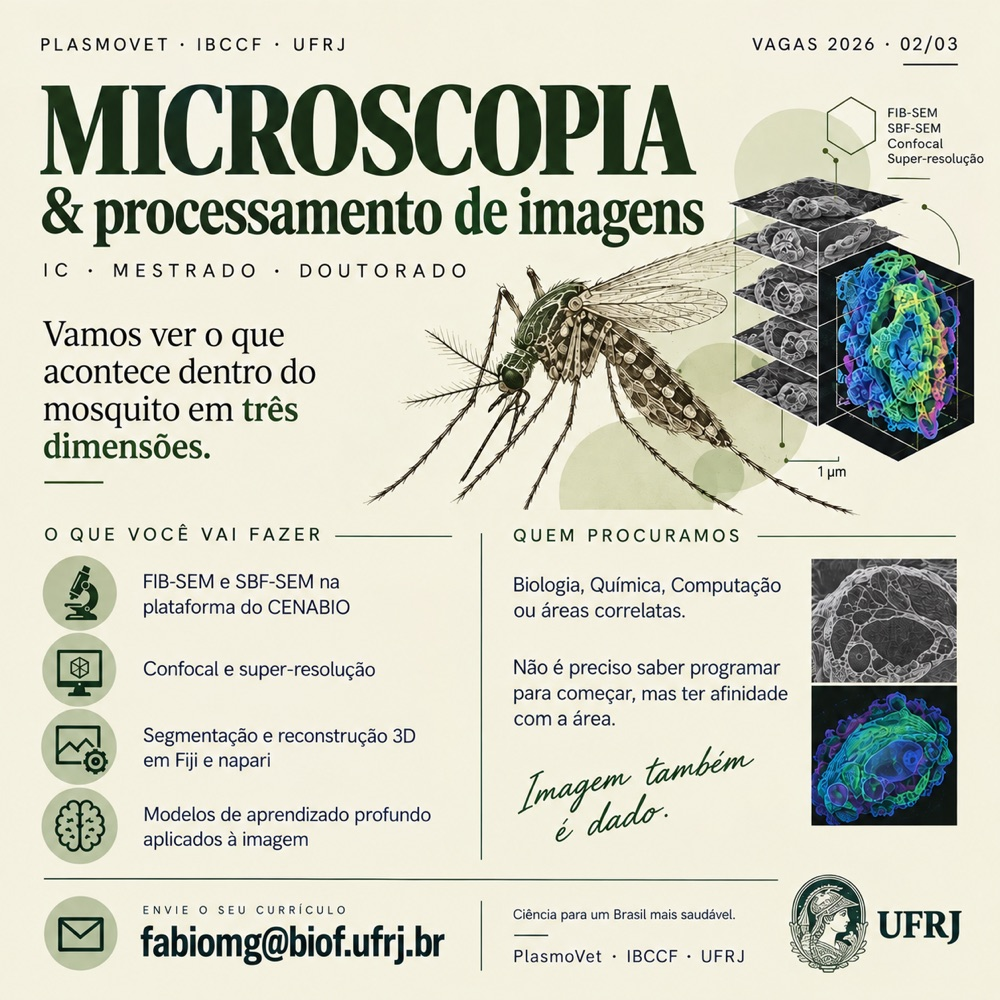

01 — IC · MSc · PhD
Microscopy & image processing.
Let's see what happens inside the mosquito in three dimensions — from volume electron microscopy to deep learning on the resulting stacks.
What you will do
- FIB-SEM and SBF-SEM on the CENABIO platform
- Confocal and super-resolution microscopy
- 3D segmentation and reconstruction in Fiji and napari
- Deep learning models applied to imaging
Who we are looking for
Biology, Chemistry, Computing or related fields. You don't need to know how to program to start, but you should feel an affinity for it.